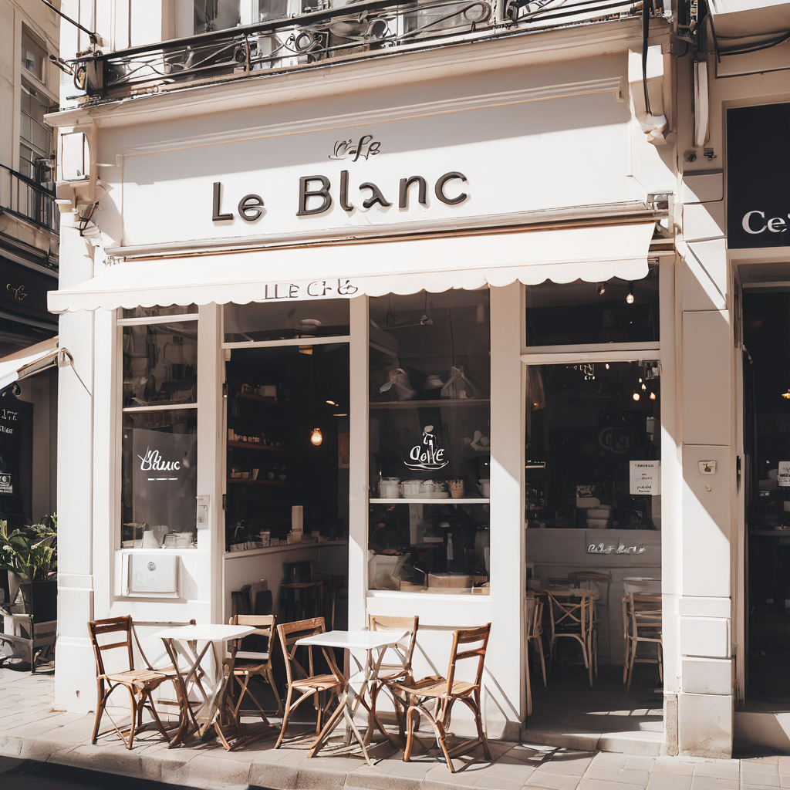

About Us
Le Blanc Café, where elegance meets flavor, is a charming establishment nestled in the heart of the city. Our café exudes a sophisticated yet cozy ambiance, inviting guests to indulge in a delightful culinary experience. At Le Blanc, we take pride in serving artisanal coffees, freshly brewed teas, and delectable pastries crafted with care and expertise. Whether you're seeking a tranquil spot for your morning pick-me-up or a relaxing environment to unwind with friends, Le Blanc Café offers a welcoming sanctuary for all coffee enthusiasts and food aficionados. Join us at Le Blanc and savor the perfect blend of quality beverages, scrumptious treats, and a warm, inviting atmosphere.
Location
City: Florence, Italy
Street: Via dei Neri
Landmark: Near the Ponte Vecchio bridge
Description: Situated in the historic center of Florence, Le Blanc Café offers a picturesque setting for visitors to enjoy their coffee and pastries while soaking in the beauty of this vibrant city. The café's location near the iconic Ponte Vecchio bridge provides a charming backdrop for a relaxing and memorable dining experience.